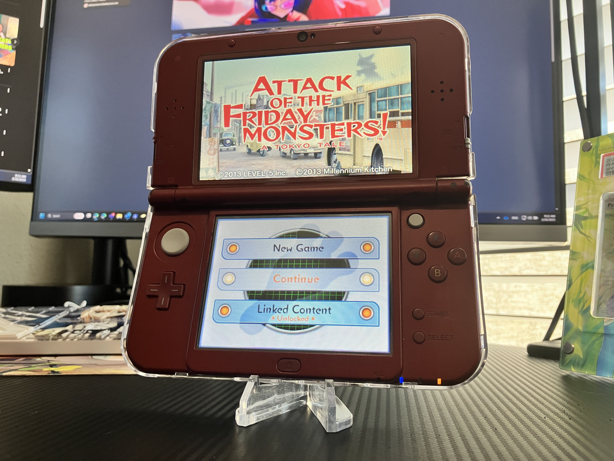

1game1week - Week 9 (2/26/25) - Attack of the Friday Monsters! A Tokyo Tale
It's Week 9! (2/26 -> 3/5)
Hey all! We're almost to March. Thanks for reading my posts thus far. I've looked forward to writing them every week.
We're also almost at double digits for week numbers, which is fun. Time is passing by.
The water spot in my ceiling is still there. Maintenance came by and used two big fans to blow air into the ceiling to dry stuff out... they were too loud, though, so I had to bail to my parents'. I don't really know how well the fans worked, but hopefully it worked out fine because I just signed a 2-year lease and I don't want to deal with mold.
It was so much nicer when I didn't have to care about these things. I guess that's partially what these posts are about. Give myself deadlines that my adult brain can comprehend, so I feel obligated to just... sit down and play a nice game. While there's no inherent pressure or consequence for missing a deadline, there's just something about it.
Last year, I 'beat' 24 games. While it's still a pretty hefty number, I'm stoked knowing I'm already halfway there at 12 in just 3 months. If I keep at it, I really should be on track to double the amount of games I was able to beat last year, and that makes me really happy. It's showing me that I'm able to just sit down and relax which is something I've struggled a lot with outside of just doomscrolling.
Some of you may not know, but I actually cross-post these between my personal blog and Facebook. I'm trying my best to get rid of social media habits (due to too much doomscrolling), so this is a nice middleground between me just cutting everything off and still putting out some of my thoughts and life into the ether. It's probably better than just throwing my phone in a lake.
None of this is what we're here for though... Let's talk about videogames.
New games from 2/19 -> 2/25:
* Kanon (Switch)
* Persona 3 Portable (Switch)
Currently, my backlog (https://backloggery.com/Aru_star_) is at +5 (lower is better).
And onto 1g1w. Once again, a game is considered "beaten" if I've accomplished the main objective of the game.
GAME: Attack of the Friday Monsters! A Tokyo Tale
PLATFORM: Nintendo 3DS
STARTED ON: 2/14
BEATEN ON: 2/15
TOTAL PLAYTIME: 4 hours and 6 minutes (Activity Log my beloved... how I miss you.)
Talking about how nicer it was when I didn't have to care about adult responsibilities...
Short and sweet game. I honestly didn't really get what the kids were even going on about, or if it was all their imagination, or if it was a really cool production. Maybe that's the point.
One of the last things I bought with the recommendation of my friend Billy before the 3DS eShop closure, which means this game is now 'legally' unobtainable. It's a shame, as it's a really sweet game.
You follow a boy named Sohta, who just moved in, and is getting acquainted with his new home... which happens to be the locale where a tokusatsu (read: Power Ranger-like) show he's a fan of is shot at. Bad guys come up, Sohta makes friends, the whole deal.
A really pretty part of this game is just that you're not really sure what you're looking at. Is it real? Is it a huge production budget? Is it Sohta's imagination?
I think it is. And that was a really touching bit of the game. There's something special about being able to see the world through the eyes of a child who loves tokusatsu, where making friends is as easy as playing Rock Paper Scissors with them.
That's all for now. See you next week!

Thanks for reading! If you need to contact me for any reason, please feel free to email me at aru@hoshikawa-aru.com.